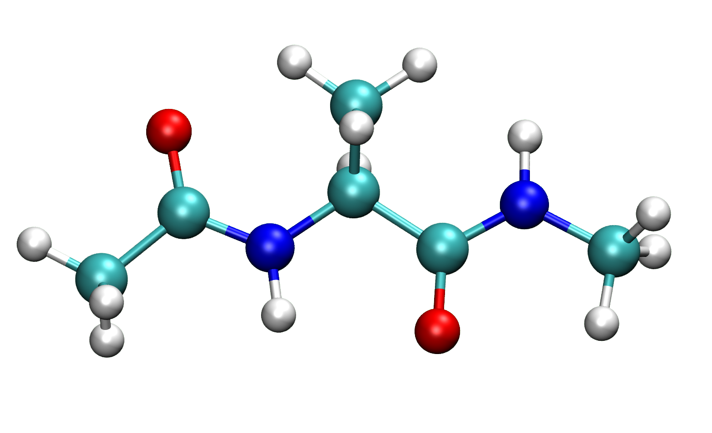

8. Molecular Structure Files#
The structures of proteins and small-molecules can be solved via experimental methods, NMR, some examples include NMR, X-ray crystallography, and Cryo-EM. There are many databases for different approaches to solving molecular structures, but I will limit this dicussion to .pdb and .xyz files.
- PDB Files#
Protein structures are saved and shared via the Protein Data Bank at the Research Collaboratory for Structural Bioinformatics (RCSB) as
.pdbfiles. These files follow a text file standard discussed later- XYZ Files#
A simple and widely used file format in computational chemistry and molecular modeling. Often used to represent the three-dimensional coordinates of atoms or small molecules. The
.xyzfiles are plain text files that contain atomic coordinates, atom types, and sometimes additional information about the system. These files are often used in Quantum Mechanics (QM) calculations!
8.1. What are PDB files?#
These are files which contain atomic coordinates and other information which descripes biological molecules. Structural biologist use experimental methods such as X-ray crystallography, Nuclear Magnetic Resonace spectroscopy, and Cryo-electron microscopy to determine the location of atoms in the structure. The information is then deposited to a RCSB.
Each structure will have a unique 4-letter/number code. Inside each file, the Protein Data Bank format consists of lines of information in a text file. Each line of information in the file is called a record. A file generally contains several different types of records, which are arranged in a specific order to describe a structure.
For example, a common molecular dynamics tutorial might look at hen egg-white lysozyme. The PDB code of the commonly used structure is PDB 1AKI. Lets look at this file.
Example of Hen Egg-White Lysozyme PDB File
Get the hen egg-white lysozyme structure, PDB code “1AKI”, from the Protein Data Bank. Visit the RCSB website, and in the search bar type, “1AKI”.
Now, download this file as PDB format.
Viewing the Contents of 1AKI.pdb
This should be in your ~/Downloads/ directory. Using your terminal, change directories into this directory with cd, and then use less to view the file. Example on MacOS:
pwd # Print the current working directory to see where you are
cd # Change directories to /Users/[username]
cd Downloads/ # Change directories to Downloads
less 1aki.pdb # View the contents using the command "less"
The less command is a Linux utility that can be used to read the contents of a text file one page (one screen) at a time. It has faster access because if a file is large, it doesn’t access the complete file, but accesses it page by page. To navigate, just use your d-pad (directional pad; up, down, left, and right keys).
When you get PDB files the from RCSB, they will start with some information pertaining to RCSB data, biological system, experiments performed, and journal/author details. Here is the first 20 lines of the files:
1HEADER HYDROLASE 19-MAY-97 1AKI
2TITLE THE STRUCTURE OF THE ORTHORHOMBIC FORM OF HEN EGG-WHITE LYSOZYME AT
3TITLE 2 1.5 ANGSTROMS RESOLUTION
4COMPND MOL_ID: 1;
5COMPND 2 MOLECULE: LYSOZYME;
6COMPND 3 CHAIN: A;
7COMPND 4 EC: 3.2.1.17
8SOURCE MOL_ID: 1;
9SOURCE 2 ORGANISM_SCIENTIFIC: GALLUS GALLUS;
10SOURCE 3 ORGANISM_COMMON: CHICKEN;
11SOURCE 4 ORGANISM_TAXID: 9031;
12SOURCE 5 CELL: EGG
13KEYWDS HYDROLASE, GLYCOSIDASE
14EXPDTA X-RAY DIFFRACTION
15AUTHOR D.CARTER,J.HE,J.R.RUBLE,B.WRIGHT
16REVDAT 3 02-AUG-23 1AKI 1 REMARK
17REVDAT 2 24-FEB-09 1AKI 1 VERSN
18REVDAT 1 19-NOV-97 1AKI 0
19JRNL AUTH P.J.ARTYMIUK,C.C.F.BLAKE,D.W.RICE,K.S.WILSON
20JRNL TITL THE STRUCTURES OF THE MONOCLINIC AND ORTHORHOMBIC FORMS OF
Other lines that start with REMARK, HELIX, SHEET, SSBOND, etc. (lines up to ATOM) contain experimental details and structural/sequence information.
Although this information is helpful, one of the most important parts (for us anyways…) are lines beginning with ATOM and HETATM. These lines contain the x-, y-, z- coordinates required to visualize the structure on Chimera, ChimeraX, or VMD.
8.2. What are ATOM lines in PDB files?#
Lines beginning with ATOM are reserved for atoms in standard residues of protein, DNA or RNA.
Note
There might be lines that start with HETATM. These lines are for non-standard residues such as, substrates, ligands, solvent, and metal ions. **They also follow the same format of ATOM lines
The general format the ATOM lines in PDB file is organized into ~12 or more columns, where each column is:
Column # |
1 |
2 |
3 |
4 |
5 |
6 |
7 |
8 |
9 |
10 |
11 |
12 |
|---|---|---|---|---|---|---|---|---|---|---|---|---|
Data |
ATOM |
Atom # |
Atom Type |
Residue Name |
Chain ID |
Residue # |
x-coordinate |
y-coordinate |
z-coordinate |
Occupancy |
B-factor |
Element Symbol |
Example of ATOM Lines (PDB 1AKI)
Use your d-pad to get to first ATOM line (this is line number, 347).
The first 20 ‘ATOM` lines in PDB 1AKI file:
347ATOM 1 N LYS A 1 35.365 22.342 -11.980 1.00 22.28 N
348ATOM 2 CA LYS A 1 35.892 21.073 -11.427 1.00 21.12 C
349ATOM 3 C LYS A 1 34.741 20.264 -10.844 1.00 16.85 C
350ATOM 4 O LYS A 1 33.945 20.813 -10.081 1.00 18.94 O
351ATOM 5 CB LYS A 1 36.872 21.435 -10.306 1.00 20.78 C
352ATOM 6 CG LYS A 1 37.453 20.248 -9.565 1.00 18.47 C
353ATOM 7 CD LYS A 1 38.688 20.649 -8.775 1.00 20.32 C
354ATOM 8 CE LYS A 1 39.057 19.508 -7.837 1.00 24.76 C
355ATOM 9 NZ LYS A 1 40.423 19.771 -7.299 1.00 28.27 N
356ATOM 10 N VAL A 2 34.739 18.961 -11.042 1.00 19.96 N
357ATOM 11 CA VAL A 2 33.903 17.998 -10.333 1.00 18.10 C
358ATOM 12 C VAL A 2 34.800 17.312 -9.294 1.00 19.39 C
359ATOM 13 O VAL A 2 35.759 16.605 -9.665 1.00 22.14 O
360ATOM 14 CB VAL A 2 33.140 17.034 -11.232 1.00 16.81 C
361ATOM 15 CG1 VAL A 2 32.251 16.084 -10.434 1.00 21.92 C
362ATOM 16 CG2 VAL A 2 32.294 17.714 -12.290 1.00 19.46 C
363ATOM 17 N PHE A 3 34.491 17.546 -8.038 1.00 19.89 N
364ATOM 18 CA PHE A 3 35.185 16.903 -6.918 1.00 17.43 C
365ATOM 19 C PHE A 3 34.742 15.441 -6.771 1.00 15.70 C
366ATOM 20 O PHE A 3 33.525 15.162 -6.862 1.00 18.52 O
Explanation of each column:
Columns 1 and 2: The first 20 lines correspond to the first 20 atoms of PDB 1AKI.
Columns 4 and 6: These atoms belong to the first 3 residues Lysine, Valine, and Phenylalanine
Column 5: The atoms of these 3 residues belong to the same chain (i.e. protein)
Columns 7,8, and 9: The x-, y-, z- coordinates, in that order.
Column 10: Ooccupancy of that atom in residue, column 5 (this value between 0.00 and 1.00)
Column 11: B-factor value
Column 12: Element symbol (i.e. chemical identity)
8.3. What is a Chain Identifier (Column 5 of ATOM)?#
A chain identifier is a single-character label used to distinguish and identify different polypeptide chains or structural components within a macromolecular structure. Each chain in a PDB file is assigned a unique chain identifier, allowing for the unambiguous identification of individual protein or nucleic acid chains within the structure.
It is commonly represented as a single uppercase letter, such as ‘A,’ ‘B,’ ‘C,’ and so on. It’s important to note that the chain identifier is case-sensitive, and it must be unique within the PDB file for each distinct chain.
Example with SpyCas9
We will visualize the PDB file of the ternary structure of SpyCas9 (SpyCas9 bound to RNA, DNA, and metal ions) using ChimeraX:
Visit the Protein Data Bank
Search for the PDB 7Z4J
Download this file
Open the file using ChimeraX
Change the molecule style to ribbon
In Step 4. (or roughly 28 seconds into the video), once we opened PDB 7Z4J, ChimeraX gives us some chain information in the “Log” panel. For this PDB, we have 5 chains corresponding to:
Chain |
Molecule |
|---|---|
A |
RNA (single-guide RNA) |
B |
Cas9 Enzyme |
C |
One strand of DNA (target-strand DNA bound to RNA) |
D |
Complementary strand of DNA (non-target strand DNA) |
c |
The rest of target-strand DNA (since this is the cleaved product) |
In this example, we are looking at the DNA cleavage product from SpyCas9. Chains C and c both correspond to the target-strand DNA, but they are labeled as separate chains because they are not connected! They are treated as separate molecules in the PDB file.
In this video, I zoom into the the HNH domain where target-strand DNA gets cleaved, and show all residues within 5 Å of the magnesium ion. Chain C is on the right, while Chain c is on the left.
8.4. Chains are Separated by TER Lines#
Each Chain is identified by an alphabetical letter, and an additional TER line. The TER line occurs at the end of the chain. If we’re looking at proteins, then usually the C-terminal Oxygen will have the atom type ,OXT, followed by a TER!
View the contents of PDB 7Z4J using less, and you can see for yourself:
cd ~/Downloads/ # Change directories to /Users/[username] on MacOS
less 7z4j.pdb # View file
# While in less, you start at the top of 7z4j.pdb
# You can skip to the bottom of the file by pressing "Shift + g"
Note
In less, you can skip to the bottom of the file by pressing shift+g. To go back to the top, just press g.
The last ~20 lines containing ‘ATOM’, ‘HETATM’, ‘TER’ should look like this:
ATOM 13936 CD2 LEU B1365 105.073 161.302 113.513 1.00152.63 C
ATOM 13937 N GLY B1366 106.547 165.755 115.990 1.00154.73 N
ATOM 13938 CA GLY B1366 106.450 166.850 116.936 1.00153.70 C
ATOM 13939 C GLY B1366 107.728 167.109 117.706 1.00153.60 C
ATOM 13940 O GLY B1366 107.771 167.980 118.575 1.00151.76 O
TER 13941 GLY B1366
HETATM13942 MG MG A 201 108.471 130.166 143.047 1.00124.93 MG
HETATM13943 MG MG B1401 128.982 134.222 104.696 1.00 62.38 MG
HETATM13944 MG MG B1402 129.678 130.604 104.214 1.00 83.43 MG
HETATM13945 MG MG B1403 134.288 121.616 135.973 1.00 56.44 MG
HETATM13946 O HOH A 301 107.802 131.851 143.930 1.00 99.69 O
HETATM13947 O HOH A 302 108.431 129.318 144.849 1.00 93.31 O
HETATM13948 O HOH A 303 108.156 131.547 141.770 1.00 95.01 O
HETATM13949 O HOH A 304 109.489 129.827 141.295 1.00 95.43 O
HETATM13950 O HOH A 305 107.313 129.453 141.610 1.00 95.40 O
HETATM13951 O HOH A 306 106.637 129.981 143.643 1.00113.87 O
HETATM13952 O HOH C 101 134.709 123.362 135.209 1.00 86.02 O
HETATM13953 O HOH B1501 134.738 122.897 137.348 1.00 88.14 O
MASTER 282 0 4 69 32 0 0 613948 5 24 122
END
We see here that following Chain B, we have a TER line, indicating the end of the protein. Following our SpyCas9 enzyme, we have some HETATM or non-standard residues such as, magnesium ions and waters, solved with the Cryo-EM structure.
8.5. What is Occupancy?#
- Occupancy#
A parameter that represents the fractional occupancy of a particular atom or group of atoms in a crystal structure. The occupancy value typically ranges from 0.00 to 1.00, where:
1.00: That atom is fully occupied,
0.00: That atom is completely unoccupied or not present.
The occupancy value is used to account for situations where multiple different types of atoms or ions may occupy the same position in the crystal lattice. For example, in a crystal structure of a protein, there may be several alternate conformations of a side chain or different ligands bound to the same site. In such cases, each atom or group of atoms may be assigned an occupancy value that reflects the probability of finding that atom or group in its specific conformation.
Important
The sum of all occupancy values for each atom in a residue conformation adds up to 1.00 or 100%!
8.6. What is B-factor?#
- B-factor #
(aka the temperature factor or Debye-Waller factor) is a parameter that represents the thermal vibrations or disorder of atoms in a crystal structure. It is used to describe the uncertainty in the precise position of each atom due to thermal motion.
The B-factor is a real number associated with each atom or group of atoms in the PDB file. It quantifies how much an atom fluctuates or vibrates around its average position in the crystal lattice. A higher B-factor indicates greater thermal motion or disorder, while a lower B-factor indicates less thermal motion and greater positional certainty.
This value can be used to gain insights into the flexibility of a molecule or a particular region within a crystal structure. For example, in a protein crystallography study, regions of a protein that are more flexible or less well-ordered may have higher B-factors, whereas well-ordered regions with less thermal motion will have lower B-factors.
8.7. Summary Records in PDB Files#
Record |
Explanation |
|---|---|
HELIX |
Location and type (right-handed alpha, etc.) of helices. One record per helix |
SHEET |
Location, sense (anti-parallel, etc.) and registration with respect to the previous strand in the sheet (if any) of each strand in the model. One record per strand |
SSBOND |
Defines disulfide bond linkages between cysteine residues |
ATOM |
This line pertain to atoms in standard residues (amino acids and nucleic acids) |
Atom # |
Atom number (starts at 1, and continues for entire PDB file!) |
Atom Type |
Atom name, additional information on this here |
Residue Name |
3-letter code for amino acids, 2 letter code for DNA, and 1-letter code for RNA |
Chain ID |
Identifies molecules, alphabetical ID (e.g. A, B, C, D) for PDBs with multiple molecules. |
Residue # |
Residue Number (starts at 1, and ends at terminal residue at the end of Chain) |
x-coordinate |
x- orthogonal coordinate in Å |
y-coordinate |
y- orthogonal coordinate in Å |
z-coordinate |
z- X orthogonal coordinate in Å |
Occupancy |
Fraction of atoms in a residue found in that xyz- coordinate. This is a number between 0.00 - 1.00. An occupancy of 1.00 indicates that the atom is found in all of the molecules in the same place in the crystal, whereas an occupancy < 1.00 suggests multiple conformations, noted by |
B-factor |
Quantification of how much an atom fluctuates around its average position in the crystal lattice. A higher B-factor indicates greater thermal motion or disorder, while a lower B-factor indicates less thermal motion and greater positional certainty |
Element Symbol |
Clear chemical identification (Carbon - C, Oxygen -O, Nitrogen -N, etc.) |
TER |
The end of a chain of residues |
8.8. What are XYZ Files?#
The XYZ file format is a text-file format. Unlike PDB files, there is no formal standard and several variations exist. However, a typical XYZ format specifies the molecule geometry by giving the number of atoms with Cartesian coordinates that will be read on the first line, a comment on the second, and the lines of atomic coordinates in the following lines.
Typically, we use these files to store molecular geometries in Quantum Mechanical (QM) calculations. These files generally contain up to a few hundred atoms. For example, let’s build the small molecule alanine dipeptide, and store this data in .xyz.
Example with Alanine Dipeptide

Alanine dipeptide is the amino acid, Alanine, with the N-/C-terminal capped by an N-acetyl and N′-methylamide to neutralize the charges. First we will build alanine dipeptide via IQmol, then save the structure as ala.xyz:
Open up the software, IQmol
Use your mouse/trackpad and click any area on the screen
Starting with the first Carbon atom, add the rest of the atoms, ignoring hydrogen
Click on the ‘C’ to get the periodic table
Click on Nitrogen, and replace the appropriate Carbons
Repeat step 5. but with Oxygen
Click on the
add hydrogensbuttonClick on the
minimize energybuttonSave the structure as
ala.xyzto your desired location (I saved them to my~/Desktop/)
Congratualations! You made your first structure files!
8.9. Viewing the Contents of ala.xyz#
First, open your terminal, and then change directories to where you saved the ala.xyz. Since I saved them to my ~/Desktop/, I will cd there, and use less to view ala.xyz:
cd ~/Desktop/
less ala.xyz
You should see something like this:
122
2
3C -4.63266 -0.12314 -0.02867
4C -3.47843 0.78724 -0.33464
5N -2.20323 0.42630 -0.00959
6C -1.04137 1.27430 -0.28628
7C 0.27575 0.55742 0.00041
8N 1.45796 1.17048 -0.29496
9C 2.75416 0.56631 -0.05757
10O 0.27431 -0.56825 0.48031
11O -3.70495 1.85032 -0.89391
12C -1.11255 2.56299 0.55432
13H -4.29553 -1.05515 0.47169
14H -5.15086 -0.39580 -0.97185
15H -5.34808 0.39806 0.64145
16H -2.06950 -0.49744 0.42698
17H -1.04318 1.52892 -1.36918
18H 1.44851 2.11097 -0.71632
19H 2.67618 -0.44502 0.39384
20H 3.33886 1.21183 0.63059
21H 3.30037 0.47916 -1.01990
22H -2.03263 3.14107 0.33971
23H -0.25509 3.23182 0.33529
24H -1.10019 2.31238 1.63679
Explanations:
The first line of
ala.xyzis the total number of atoms.The second line is reserved for comments, so you can include details about the structure here
The rest of the file contains the elemental symbol, followed by x-,y-z- coodinates
Simple yeah?
8.10. Additional Resources#
For more information, please refer to the following resource:
RCSB: Guide to Understanding PDB data
“The primary information stored in the PDB archive consists of coordinate files for biological molecules. These files list the atoms in each protein, and their 3D location in space. These files are available in several formats (PDB, mmCIF, XML). A typical PDB formatted file includes a large “header” section of text that summarizes the protein, citation information, and the details of the structure solution, followed by the sequence and a long list of the atoms and their coordinates. The archive also contains the experimental observations that are used to determine these atomic coordinates.”